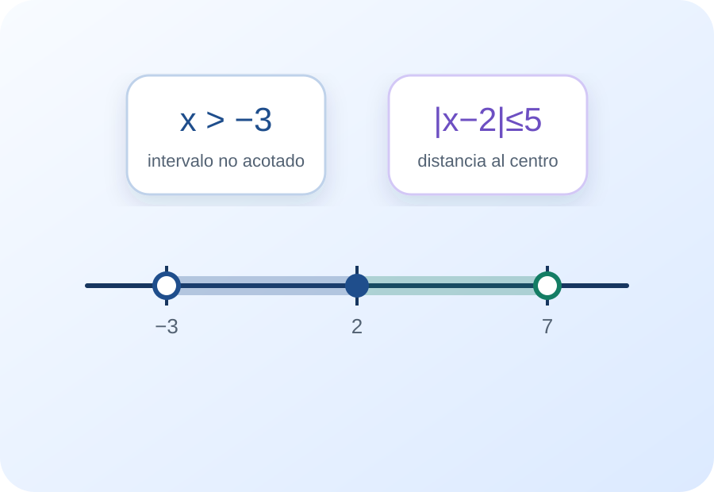
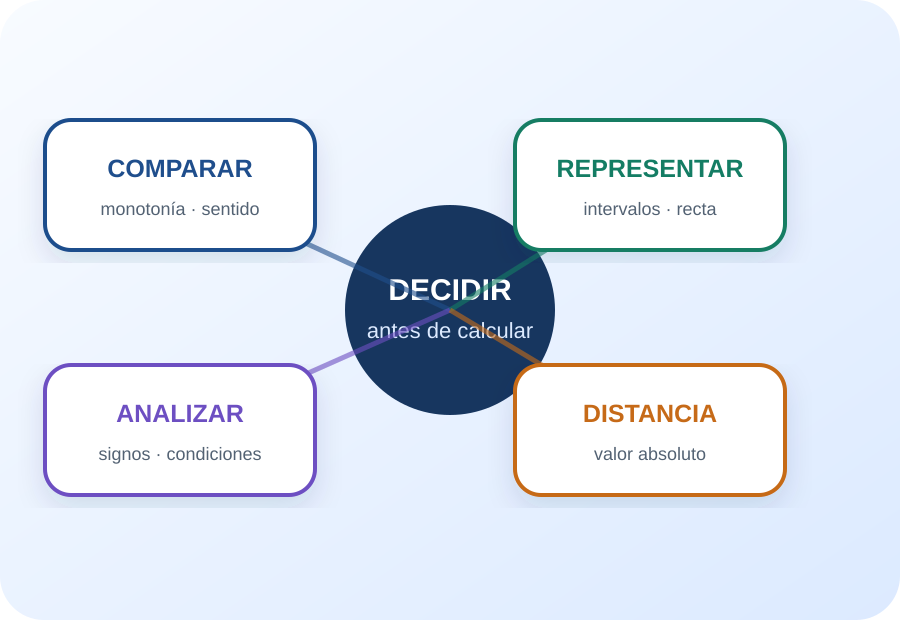

Comparar
Usar monotonía de suma y producto para obtener inecuaciones equivalentes.
Cápsula 3 · Inecuaciones y valor absoluto
Inecuaciones, intervalos, condiciones de existencia y valor absoluto
Un recorrido para pasar de una comparación algebraica a una región de la recta real, combinar intervalos, analizar signos y reinterpretar el valor absoluto como distancia.
El progreso y la bitácora se guardan solamente en este dispositivo.

Pregunta central: ¿Cómo se transforma una desigualdad en un conjunto de puntos de la recta sin perder el sentido del orden?
Antes de resolver
La propuesta reorganiza la teoría y los ejemplos de los materiales de la cátedra en unidades breves. Cada nodo combina explicación, representación, una decisión matemática y devolución inmediata. El objetivo es sostener un recorrido completo sin imponer un único orden.
Usar monotonía de suma y producto para obtener inecuaciones equivalentes.
Traducir entre desigualdad, intervalo y gráfico en la recta.
Resolver productos, cocientes y condiciones de existencia.
Usar valor absoluto para describir regiones centradas o exteriores.
“Una solución de inecuación no suele ser un número aislado: es una región que debe leerse algebraica y geométricamente.”
Elegí una entrada
Los nodos conectan la transformación algebraica con la representación en intervalos. El valor absoluto funciona como puente entre desigualdad y distancia.
¿Cuándo una operación mantiene o invierte la desigualdad?
¿Qué información guardan los paréntesis y los corchetes?
¿Cómo decidir el signo de un producto o cociente sin probar números al azar?
¿Qué región describe estar cerca o lejos de un punto?
Nodo 01
¿Cuándo una operación mantiene o invierte la desigualdad?
Sumar el mismo real a ambos miembros conserva el sentido. Multiplicar por un número positivo también lo conserva; multiplicar por un número negativo invierte la desigualdad.
Miembro izquierdo, símbolo de desigualdad y miembro derecho.
Si a < b, entonces a + c < b + c para todo real c.
Si c > 0, el sentido se conserva; si c < 0, se invierte.
Puede ser un intervalo, una unión de intervalos, ℝ o ∅.
El signo no es un detalle
De −x < 4 se multiplica por −1 y se invierte la desigualdad: x > −4. No invertirla cambiaría el conjunto solución.
Decisión rápida
Nodo 02
¿Qué información guardan los paréntesis y los corchetes?
La notación de intervalos condensa una región de la recta. Los corchetes incluyen el extremo; los paréntesis lo excluyen. Unión e intersección permiten combinar condiciones.
(a,b), (a,b], [a,b) y [a,b] se distinguen por la inclusión de los extremos.
Con ±∞ siempre se usan paréntesis, porque infinito no es un número real alcanzable.
Reúne los elementos que pertenecen a uno u otro conjunto.
Conserva únicamente los elementos comunes; representa el “y” entre condiciones.
Una intersección del Trabajo Práctico
[2,7] ∩ (5,9] contiene los números mayores que 5 y, al mismo tiempo, no mayores que 7. El resultado es (5,7].
Decisión rápida
Nodo 03
¿Cómo decidir el signo de un producto o cociente sin probar números al azar?
Las propiedades de signos transforman una inecuación de producto o cociente en combinaciones de condiciones. Antes de resolver, los denominadores, logaritmos y raíces pares imponen restricciones.
Los factores tienen el mismo signo; para producto negativo, signos opuestos.
Se usa el mismo análisis, pero el denominador nunca puede ser cero.
Denominador ≠ 0, argumento logarítmico > 0 y radicando de raíz par ≥ 0.
Cada condición produce un intervalo; las conjunciones se intersectan y las alternativas se unen.
Cociente racional
(x − 3)/(4 − x) > 0 exige numerador y denominador del mismo signo, con x ≠ 4. El único caso posible es 3 < x < 4.
Decisión rápida
Nodo 04
¿Qué región describe estar cerca o lejos de un punto?
El valor absoluto de x es su distancia al origen. Más generalmente, |x − c| es la distancia entre x y c. Las desigualdades con valor absoluto describen regiones interiores o exteriores respecto de un centro.
|x| = x si x ≥ 0 y |x| = −x si x < 0.
d(x,y) = |x − y|. Por eso |x − c| ≤ r describe puntos a distancia no mayor que r de c.
|x| ≤ d equivale a −d ≤ x ≤ d; produce un intervalo centrado.
|x| ≥ d produce dos regiones exteriores: x ≤ −d o x ≥ d.
Interpretación geométrica
|x − 5| < 2 significa “la distancia de x a 5 es menor que 2”. Por lo tanto, 3 < x < 7.
Decisión rápida
Actividad integradora
Leé el caso, elegí una respuesta y revisá la devolución. Cada situación tiene un identificador para registrar tu estrategia en la bitácora.
Pausa y cambio de registro
El audio propone una pausa activa, el esquema organiza las conexiones y los videos muestran procedimientos. Los recursos externos son complementarios: la referencia principal sigue siendo el material de la cátedra.
Elegí una pista original de la cápsula y usá la pregunta cambiante para revisar tu estrategia.

El centro del esquema no es una fórmula: es la decisión que precede al cálculo.
Microvideo creado para resolver −2x < 6 y conectar |x − 2| ≤ 4 con el intervalo [−2,6].
Resolución de una inecuación racional, enlazada desde el apunte para el taller.
Abrir el video en una pestaña nuevaResolución de una inecuación con valor absoluto, enlazada desde el apunte para el taller.
Abrir el video en una pestaña nuevaFuentes y transparencia
Las explicaciones son paráfrasis didácticas de los materiales proporcionados. No se incorporaron citas textuales extensas. Los videos externos se identifican como ampliaciones y no fundamentan el contenido central.
Propuesta docente: Lucas Colipe, Matemática 1, Facultad de Ciencias del Ambiente y la Salud, Universidad Nacional del Comahue.
Diseño y desarrollo: proyecto HTML, CSS y JavaScript elaborado con asistencia de inteligencia artificial generativa a partir de las indicaciones del docente y los materiales de la cátedra.
Alcance: la IA se utilizó para organizar contenidos, redactar paráfrasis, programar interacciones y producir recursos audiovisuales. La selección final, la revisión disciplinar y la publicación corresponden al equipo docente.
Privacidad: la bitácora se guarda únicamente mediante localStorage en el dispositivo del estudiante y no se envía a ningún servidor.